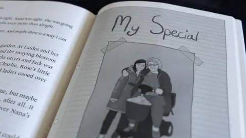

Watch
Spiderman star om Hollywood's
gender pay gap
Kirsten Dunst reveals why she never
challenged being paid less than her
male co-stars
5 days ago | NEWS Entertainment & Arts
Gladiators final: Contenders are
you ready?
The four Gladiators finalists were on
BBC Breakfast ahead of tonight's
ultimate challenge.
30 Mar 2024 | NEWS Entertainment & Arts

What happens when Nana
What happens when Nana
moves into a care home?
The book aims to help children
understand what happens when elderly
relatives move into a care home.
29 Mar 2024 | NEWS London

The success story behind
England's homeless football
team
Meet the Sudanese refugee taking
England's homeless footballers to a
World Cup in South Korea.
28 Mar 2024 | NEWS Entertainment & Arts